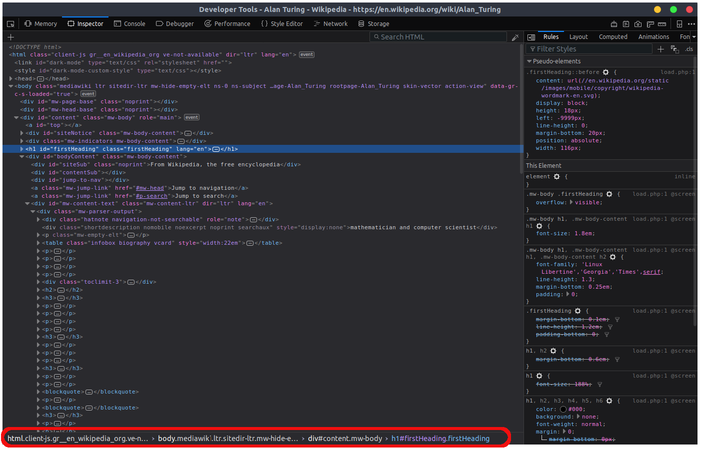
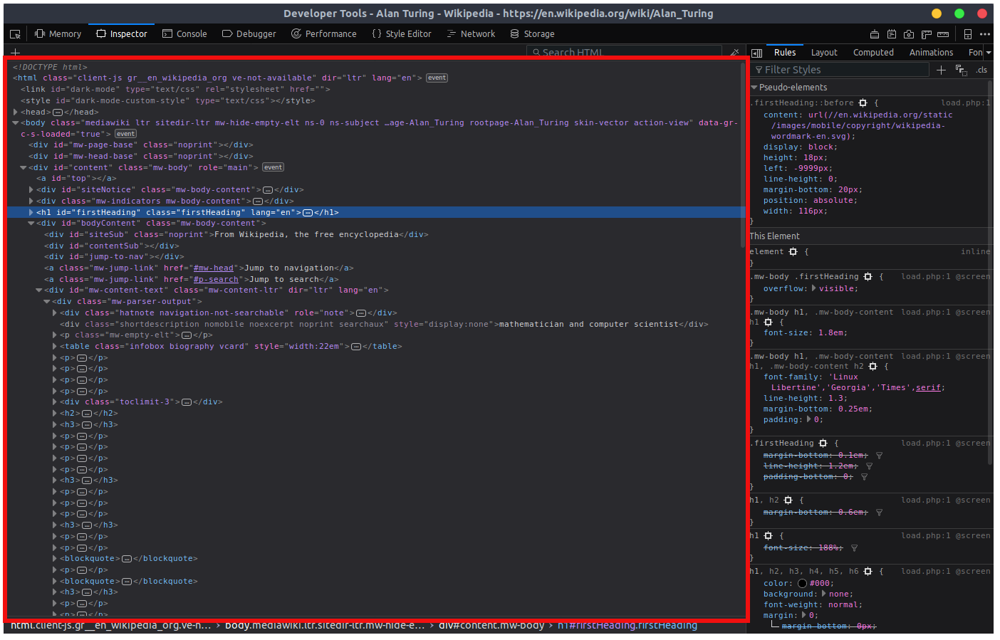

Examine and edit HTML
As we open the developer tools the first thing we encounter is the html pane which is positioned on the left side of the tools.
We'll cover first the outer elements of the pane and then go into the most important element. At the bottom we can see the breadcrumbs section from where the hierarchy of an element is displayed.
Also at the top there is a toolbar with three options:
- Add a new node
- Search the html
- Grab color from page
The last element is one of the most important for this tool. The HTML tree shows the elements of a web page and their content. You can edit the html of a site using this tool. For example: double clicking on an element makes it editable and we can change that html.
